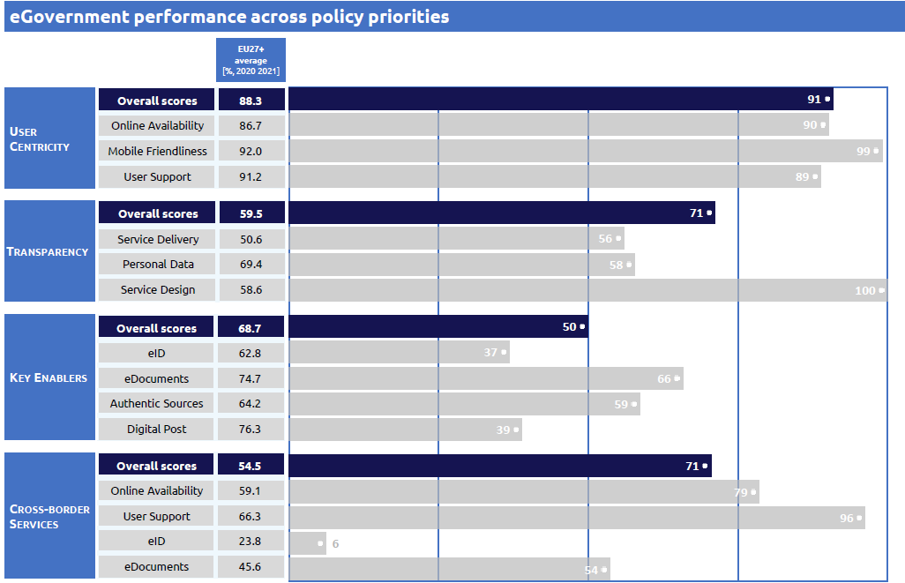

Digital Public Administration Factsheet 2022
Ireland
2 Digital Public Administration Highlights 10
3 Digital Public Administration Political Communications 13
4 Digital Public Administration Legislation 23
5 Digital Public Administration Governance 30
6 Digital Public Administration Infrastructure 34
7 Cross border Digital Public Administration Services for Citizens and Businesses 43

Country
Profile
1
The following graphs present data for the latest Digital Public Administration Indicators for Ireland compared to the EU average. Statistical indicators in this section reflect those of Eurostat at the time the Edition is being prepared.
Percentage of individuals using the internet for interacting with public authorities in Ireland | Percentage of individuals using the internet for obtaining information from public authorities in Ireland |
Percentage of individuals using the internet for downloading official forms from public authorities in Ireland | Percentage of individuals using the internet for submitting completed forms to public authorities in Ireland |
In 2017, the European Commission published the European Interoperability Framework (EIF) to give specific guidance on how to set up interoperable digital public services through a set of 47 recommendations. The picture below represents the three pillars of the EIF around which the EIF Monitoring Mechanism was built to evaluate the level of implementation of the EIF within the Member States. It is based on a set of 71 Key Performance Indicators (KPIs) clustered within the three main pillars of the EIF (Principles, Layers and Conceptual model), outlined below.

Source: European Interoperability Framework Monitoring Mechanism 2021
For each of the three pillars, a different scoreboard was created to breakdown the results into their main thematic areas (i.e. the 12 principles of interoperability, the interoperability layers and the components of the conceptual model). The thematic areas are evaluated on a scale from one to four, where one means a lower level of implementation and 4 means a higher level of implementation. The graphs below show the result of the second EIF Monitoring Mechanism data collection exercise for Ireland in 2021.
Source: European Interoperability Framework Monitoring Mechanism 2021
Ireland’s results in Scoreboard 1 show an overall good implementation of the EIF Principles, scoring above the European average for Principles 1 (Subsidiarity and Proportionality) and 9 (Multilingualism). Areas of improvements are concentrated in the Principles 4 (Reusability), 7 (Inclusion and Accessibility), and 12 (Assessment of Effectiveness and Efficiency) whose results show an upper-medium performance in the implementation of corresponding recommendations. For instance, by working on Recommendation 6, which concerns the reuse, share, and cooperation in the development of joint solutions when implementing European public services, the overall score for Principle 4 would be improved.
Source: European Interoperability Framework Monitoring Mechanism 2021
The Irish results for the implementation of interoperability layers assessed for Scoreboard 2 show an excellent performance, with a score of 4 in all layers. In order to furher improve its performance, the country should focus on ensuring holistic governance of interoperability activities across administrative levels and sectors (Interoperability governance – Recommentation 20).
Source: European Interoperability Framework Monitoring Mechanism 2021
Ireland’s scores assessing the Conceptual Model in Scoreboard 3 show an overall good performance, achieving a higher score than the EU average concertning external information sources and services. However, some areas of improvement have also been identified. Particularly, recommendations related to the conceptual model could be improved by deciding on a common scheme for interconnecting loosely coupled service components and puting in place and maintaining the necessary infrastructure for establishing and maintaining European public services (Conceptual Model – Recommendation 35). In addition, Ireland should use trust services according to the Regulation on eID and Trust Services as mechanisms that ensure secure and protected data exchange in public services (Secuity and Privacy – Recommendation 47) in order to achive an higher score in this component.
Additional information on Ireland’s results on the EIF Monitoring Mechanism is available online through interactive dashboards.
The graph below presents the main highlights of the latest eGovernment Benchmark Report, an assessment of eGovernment services in 36 countries: the 27 European Union Member States, as well as Iceland, Norway, Montenegro, the Republic of Serbia, Switzerland, Turkey, Albania and Macedonia (referred to as the EU27+).
The study evaluates online public services on four dimensions:
The 2022 report presents the biennial results, achieved over the past two years of measurement of all nine life events used to measure the above-mentioned key dimensions. More specifically, these life events are divided between seven ‘Citizen life events’ (Starting a small claim procedure, Moving, Owning a car, Health measured in 2021, and Career, Studying, Family life, measured in 2020) and two ‘Business life events’ (Regular Business Operations, measured in 2021, and Business start-up, measured in 2020).

Source: eGovernment Benchmark Report 2022 Country Factsheets

Digital Public Administration Highlights
2
| Digital Public Administration Political Communications |
Following the announcement by the Minister of the Environment, Climate and Communications of the development of a new National Digital Strategy in June 2020 and a public consultation at the end of 2018, the government launched the new national digital strategy, Harnessing Digital – The Digital Ireland Framework in February 2022, to drive and enable the digital transition across the Irish economy and society. This high-level framework sets out a pathway to support Ireland’s ambition to be a digital leader at the heart of European and global digital developments; and places a strong emphasis on inclusiveness, security and safety, underpinned by strong governance and a well-resourced regulatory framework.
Connecting Government 2030 was published in March 2022 and sets out an approach to deliver digital government for all, benefitting both society and the broader economy. The Public Service in Ireland must harness digitalisation to drive a step-change in how people, businesses, and policy makers interact, ensuring interoperability across all levels of government and across public services. We must ensure that in digitalising our public services we take a “user first” and “business first” approach.
In July 2021, the Department of Enterprise, Trade and Employment published the AI – Here for Good: National Artificial Intelligence Strategy for Ireland. This strategy aims to provide a high-level direction to the development, adoption and implementation of AI in Ireland.
Digital Public Administration Legislation |
The commencement of additional subsections of the Data Sharing and Governance Act 2019 in July 2021, enabled the creation of the Data Governance Board to assess and recommend approval of data sharing agreements between Public Bodies. A review of the Freedom of Information Act is underway, which included a public consultation. Work is ongoing regarding the proposal of a European Digital Identity Framework amending the eIDAS Regulation and in parallel, implementation of the Single Digital Gateway Regulation. Many other pieces of existing legislation apply to digital public administration such as the ePrivacy Regulations.
Digital Public Administration Governance |
Under the Programme for Government, and to aid in the delivery of the Digitalisation of Public Services dimension of the national digital strategy, the OGCIO has established a Digital Strategy Implementation Unit. Its aim is to work closely with stakeholders to develop a digital government development roadmap to make digital public services more accessible. The unit will align new governance structures foreseen in the national digital strategy, maintain a dashboard on digital progress and highlight particular areas where progress has been made.
Connecting Government 2030 sets out a framework within which all public service organisations can deliver their own digital commitments focussed on the targets set out in The Digital Ireland Framework and Civil Service Renewal 2030 as appropriate. If they have not done so already, they will also be required to have a named board member responsible for digital delivery within their department and/or sector who will be the liaison with the Digital Strategy Implementation Unit.
| Digital Public Administration Infrastructure |
In 2021, Ireland continued to adapt and innovate in the battle with Covid-19. One of the keys areas of infrastructure lay with the Digital Covid Certificate which certified fully vaccinated status on over 4 million people. This Digital Public Administration Infrastructure facilited the reopening of various parts of the economy and non-essential international travel.
Digital Public Administration Political Communications
3
Harnessing Digital – The Digital Ireland Framework
Following the announcement by the Minister of the Environment, Climate and Communications of the development of a new National Digital Strategy in June 2020 and a public consultation at the end of 2018, the government launched the new national digital strategy, Harnessing Digital – The Digital Ireland Framework in February 2022, to drive and enable the digital transition across the Irish economy and society.
This high-level framework sets out a pathway to support Ireland’s ambition to be a digital leader at the heart of European and global digital developments; and places a strong emphasis on inclusiveness, security and safety, underpinned by strong governance and a well-resourced regulatory framework. It will help us fully realise many of the benefits of digital including: more flexible and remote working and new job opportunities; new markets and customers for businesses; more efficient and accessible public services for all; and empowerment and choice in how we learn or participate in social activities.
The government will ensure these benefits are achieved by:
This digital strategy aligns with both EU priorities, under the Digital Decade, and national priorities, under the 2021 Economic Recovery Plan and Ireland’s National Recovery and Resilience Plan. It also complements our work towards achieving Ireland’s climate targets, with our green and digital ambitions re-enforcing each other.
Connecting Government 2030: A Digital and ICT Strategy for Ireland’s Public Service
Connecting Government 2030 was published in March 2022 and sets out an approach to deliver digital government for all, benefitting both society and the broader economy. The Public Service in Ireland must harness digitalisation to drive a step-change in how people, businesses, and policy makers interact, ensuring interoperability across all levels of government and across public services. We must ensure that in digitalising our public services we take a “user first” and “business first” approach. The strategy provides a framework within which all public service organisations can deliver their own digital commitments focussed on the targets set out in the Digitalisation of Public Services dimension of the national digital strategy, Harnessing Digital – The Digital Ireland Framework. It also aligns with the targets set out in Civil Service Renewal 2030 as well as addressing digital targets set by the EU. The strategy will carry forward the GovTech 2019 Priority Action Plan and incorporates specific actions from the Programme for Government. Connecting Government 2030 specifically replaces the previous Public Service ICT Strategy and eGovernment Strategy 2017–2020 . It will also act as an umbrella strategy for actions across a number of other related government policies and strategies, thereby ensuring an overall coordinated and integrated approach to their delivery.
The strategy outlines six priority action areas to help deliver on the ambitions of Connecting Government 2030:
These actions are supported by four underpinning design principles:
Berlin Declaration on Digital Society and the Value-Based Digital Government
In December 2020, the Irish government signed the Berlin Declaration on Digital Society and Value-Based Digital Government, thus re-affirming its commitment – together with other EU Member States – to foster digital transformation in order to allow citizens and businesses to harness the benefits and opportunities offered by modern digital technologies. The Declaration aims to contribute to a value-based digital transformation by addressing and strengthening digital participation and digital inclusion in European societies. The ambitions of the Berlin Declaration are reflected in the national digital strategy, Harnessing Digital – The Digital Ireland Framework, and Connecting Government 2030: A Digital and ICT Strategy for Ireland’s Public Service.
GovTech Report
In November 2019, the Minister for Public Expenditure and Reform released the Cruinniú GovTech Report which sets out the ambitions and goals of the Irish government in the years to come and identifies indicators to measure progress. The fifth priority highlighted by the report is the delivery of digital services, the continuous development of employee skills and the adoption of innovation. Following government approval, the Minister for Public Expenditure and Reform announced plans for prioritising digital transformation within the public service in 2020. The aim is to continue the promotion and acceleration of the digital dimension to modernise and streamline government eServices in 2020. The GovTech Priority Action Plan will be taken forward by Connecting Government 2030: A Digital and ICT Strategy for Ireland’s Public Service.
Civil Service Renewal 2030
Civil Service Renewal 2030 is an ambitious 10-year strategy of reform for the Civil Service, published in May 2021. The Strategy will be implemented through a series of 3-year action plans. These action plans will detail the precise goals and initiatives which will progress each of our strategic priorities. Our progress on the commitments within these action plans will be continuously measured, evaluated, and reported on.
The first of these action plans, Civil Service Renewal 2024 (CSR2024), has already been published and will deliver on specific actions over the next three years.
Civil Service Renewal 2030 has been collaboratively developed, and it will be collaboratively delivered. A shared responsibility of all civil servants to own the commitments within this Strategy will make our Civil Service Renewal 2030 vision a reality.
Public Service Data Strategy
The Public Service Data Strategy for the period 2019–2023 was published in December 2018, providing a detailed vision with a set of goals and actions to deliver a more joined-up whole-of-government approach to how data is used and managed within the public service. The strategy aimed to put in place a series of measures to improve how data is governed, managed and re-used in a secure, efficient and transparent manner, for the benefit of citizens, businesses and policy makers.
Its implementation will put government in a better place to respond to service demands in an agile manner by:
Open Data Strategy
A new Open Data Strategy for the period 2017–2022 was published in July 2017. This strategy built on achievements made since the launch of the Open Data Initiative in 2014. Its two core objectives are: first, the publication of high-value government data in open format, making it publicly available and freely reusable; and second, engaging with a broad community of stakeholders to promote its social and economic benefits. The strategy sets out seven strategic themes which will guide the Open Data Initiative over the lifetime of the strategy:
Ireland’s Open Data Portal, operated by the Government Reform Unit, now provides access for reuse and redistribution to over 13 000 datasets held by public bodies. Ireland continues to be ranked amongst the Open Data 'trend-setters' in the European Commission’s Open Data Maturity Assessment published in December 2021.
The Department of Public Expenditure and Reform issued Circular 20/2021, which sets out public service organisations’ obligations to comply with the Open Data Directive.
Open Government Partnership National Action Plan
In December 2016, Ireland published its Open Government Partnership National Action Plan 2016–2018.
An online portal was deployed to reach a wide audience, encourage discussion, and inspire a sense of community. Civic forums were also held for further input and insight from civil society. Feedback and recommended actions were collected and analysed, and then compiled in a first draft that was opened to comments. As a result, the Open Government Partnership was built on continuous engagement with the public and civil society.
The Action Plan comprised 18 commitments across four main themes:
The National Action Plan has run until the end of June 2018.
The 2020 ‘Programme for Government: Our Shared Future’ includes a commitment to continue and reinvigorate participation by the public sector in the Open Government Partnership.
eID in Ireland
Both the Harnessing Digital – The Digital Ireland Framework and the Connecting Government 2030: A Digital and ICT Strategy for Ireland’s Public Service highlight Ireland has the fastest growing take-up of eIDs in the world for government services.
National Cybersecurity Strategy
The National Cybersecurity Strategy, published in December 2019, sets out a series of systematic measures designed to protect the nation against cybersecurity threats, develop the cybersecurity sector, and deepen international engagement on the future of the internet. The strategy was informed by the operational experience acquired by the National Cyber Security Centre (NSCS) between 2015 and 2019.
The key objectives of the strategy are:
In July 2021 the Government agreed to expand the NCSC from 25 to 45 staff over the next 18 months and to 70 within 5 years. The associated budgetary increase for the NCSC for 2022 is estimated at EUR 2.5 million.
The NCSC, in conjunction with the Office of the Government Chief Information Officer (OGCIO), have now developed the Standards which are intended to create an acceptable security standard and form a broad framework for a set of measures which can be revised over time.
This model follows a holistic and comprehensive approach to the issues related to cybersecurity, which combines the best of various existing standards to address the needs of key stakeholders.
The strategy was followed by the publication of the Public Sector Cyber Security Baseline Standards in November 2021. These standards have been developed by the NCSC and the OGCIO to provide a holistic and comprehensive approach to Government ICT cyber security, including cloud services.
Public Service Data Strategy
The Public Service Data Strategy 2019–2023 acknowledges the principles and benefits derived from establishing base registries. In particular, it contains a specific action to “develop base registries and the processes required to govern their operation”. The Data Sharing and Governance Act 2019 includes powers to establish base registries.
National Public Procurement Policy Framework
In 2019, the National Public Procurement Policy Framework (NPPPF) set out the overarching policy framework for public procurement in Ireland, consisting of five thematic strands:
The framework sets out the procurement procedures to be followed by government Departments and State bodies under national and EU rules. The framework supports contracting authorities, including the OGP, the four key sectors (health, education, local government and defence), individual Departments, offices, commercial and non-commercial State bodies, and private entities which are subsidised for 50% or more by a public body, when awarding contracts for works, goods and services. It supports and enables public bodies to adopt procedures to meet their public procurement requirements and facilitates compliance with EU and national procurement rules.
eHealth Strategy
The purpose of the eHealth Strategy is to provide an outline of eHealth and demonstrate how the individual citizen, the Irish healthcare delivery systems – both public and private – and the economy as a whole will benefit from eHealth. Priority areas for initial development include ePrescribing, online referrals and scheduling, Telehealth (particularly relating to the management of chronic disease) and the development of summary patient records.
Knowledge and Information Strategy
In May 2015, the Office of the Chief Information Officer at the Health Service Executive (HSE) published the Knowledge and Information Strategy delivering the benefits of eHealth in Ireland. The Strategy aims to deliver truly patient-centred, safe and excellent integrated care. The Strategy builds upon the eHealth Vision for Ireland and outlines how integrated information and enabling technology will support the delivery of innovative, safe and high-quality patient care to meet the needs of the population across all patient pathways and care settings. This strategy also outlines how to transform the organisation, from a knowledge and information perspective, to meet the delivery challenge ahead and to support the vision and values outlined in the HSE Corporate Plan.
Technology Skills 2022: Ireland’s Third ICT Skills Action Plan
Ireland’s Third ICT Skills Action Plan 2022 is a plan to meet the country’s high-level ICT skills needs. This action plan sets out to achieve a step-change in Ireland’s supply performance, through a focussed set of impactful actions that will underpin the State’s continuing status as a global centre for high-level ICT talent. This ambition is being realised through a concerted partnership approach between government, industry, and the education and training sector.
Research Priority Areas
In March 2018, the government announced the revised Research Priority Areas 2018–2023, aligning the majority of competitively awarded public investment in research with 14 priority areas. Innovation 2020, Ireland’s strategy for research and development, science and technology, commits to reviewing the priority areas to ensure that they are still valid and to refreshing and revising them, if necessary, in the light of changed circumstances. The objective is to ensure that Ireland is favourably positioned to benefit from global opportunities now and into the future, by responding to worldwide megatrends and challenges that are shaping the global economy and Ireland’s place in it. Both the themes and the priority areas have been revised and updated repeatedly to reflect changing circumstances since 2012.
National Artificial Intelligence Strategy for Ireland
In July 2021, the Department of Enterprise, Trade and Employment published the AI – Here for Good: National Artificial Intelligence Strategy for Ireland. This strategy aims to provide a high-level direction to the development, adoption, and implementation of AI in Ireland. The main objectives of the strategy are:
Declarations on Artificial Intelligence, Blockchain and Innovation Radar
In April 2018, the Minister for Trade, Employment, Business, EU Digital Single Market and Data Protection signed the EU Declarations on Artificial Intelligence, Blockchain and Innovation Radar. The aim was to harness opportunities for Ireland in the technology sector. These declarations defined areas where agreement had been reached by Member States for future cooperation.
Cryptoassets and Blockchain Technology
In April 2018, Ireland was one of the 21 EU Member States which signed the declaration creating the European Blockchain Partnership with the goal of cooperating in the establishment of a European Blockchain Services Infrastructure (EBSI). Over the course of 2019, Ireland was an active participant in the work of the partnership, through its policy, technical, and use case groups, with ongoing engagement in particular with the Self-Sovereign Identity use case working group.
Internationally, Ireland is a member of EU and global initiatives, including the International Association for Trusted Blockchain Applications (INABTA) and the OECD. Through INABTA, Ireland will participate in the Government Advisory Board, engaging with the blockchain sector via a global discussion. At a national level, Ireland is engaging with the blockchain industry and academia through the public-private partnership called Blockchain Ireland.
Over 2019, work continued on the implementation of the Ireland for Finance Strategy (IFS) 2025, which aims to foster opportunities in international financial services by facilitating the use of new technologies such as blockchain through the following actions:
In March 2018, the Ministers for Finance and for Public Expenditure and Reform announced the creation of an internal working group (the Intra-Departmental Working Group) to monitor further developments in the areas of virtual currencies and blockchain technology. The aims of the Intra-Departmental Working Group are the following:
No political communication was adopted in this field to date.
Cloud Computing Advice Note
The Cloud Computing Advice Note was published in October 2019. It recognised that the world of cloud computing, as well as the policy and legislative environments, have developed rapidly, and that the industry has matured in terms of the viability and benefits of cloud adoption. This guidance note provides a proactive and progressive approach to embracing cloud computing.
No political communication was adopted in this field to date.
No political communication was adopted in this field to date.
National Broadband Plan
In June 2020, the Department of the Environment, Climate and Communications published the National Broadband Plan (NBP), which is the government’s initiative to deliver high speed broadband services to all premises in Ireland. This will be delivered through investment by commercial enterprises coupled with intervention by the State in those parts of the country where private companies have no plans to invest. By 2026, the contractor, National Broadband Ireland, will build a predominantly fibre-based network to cover 540 000 premises in Ireland with a minimum download speed of 150 Mbps. Around 146 000 kilometres of fibre will cover 96% of Ireland’s land mass.
Disruptive Technologies Innovation Fund
The National Development Plan (NDP) under Project Ireland 2040 confirms the establishment of a EUR 500 million challenge-based Disruptive Technologies Innovation Fund (DTIF) that will see investment in the research, development and deployment of disruptive technologies and applications on a commercial basis. Specific priority areas include robotics, artificial intelligence, augmented and virtual reality, advanced and smart manufacturing, and smart and sustainable food production and processing.
Digital Public Administration Legislation
4
No legislation was adopted in this field to date.
Data Sharing and Governance Act
The Data Sharing and Governance Act (DSGA) 2019 was signed into law on 4 March 2019. The act comes in the wake of the General Data Protection Regulation (GDPR) and Data Protection Act 2018, with the aim to clarify and strengthen the data-sharing rights and obligations of public bodies. The act paves the way for more efficient and cost-effective service delivery by public bodies by providing a clear legal basis for the sharing of personal data in certain circumstances. The aim is to reduce the administrative burden associated with the need for individuals to provide their personal data to numerous public bodies. The act allows for the sharing of personal data between public bodies where the sharing is for the performance of a function of either of the public bodies. In addition, the act provides for the establishment of a Personal Data Access Portal that would allow individuals to view their personal data as well as information in relation to any data breaches affecting their personal data and the data-sharing agreements under which their personal data is processed. Besides, the act allows the Minister to designate base registries for use by public bodies so that they can access personal data without having to collect it directly from service users. A base registry will have an owner who must ensure the personal data is accurate and up to date.
Guidance on the Data Sharing Governance Framework under the DSGA 2019
Public Service Bodies wishing to leverage the DSGA 2019 as their legal basis for sharing data can refer to this Guidance to find clarification on what constitutes data sharing, when data can and can’t be shared, who can share data, and see a summary of how to share data and the processes involved with the new Data Sharing Governance Framework.
The Data Sharing Playbook is essentially a flowchart that navigates the stages of data sharing along with roles and responsibilities. The stages are sequential and must be followed in order to adhere to the Data Sharing Governance Framework.
A draft Data Sharing Agreement Template is currently being piloted and has been designed for the sharing of personal data under the DSGA 2019.
Freedom of Information Act
A new Freedom of Information (FOI) Act came into force on 14 October 2014. It provided for the commitments in relation to freedom of information contained in the Programme for Government by removing the main substantive restrictions in the access to official information introduced in 2003, extending FOI to all public bodies — unless specifically exempt in whole or in part — and providing a framework for the extension of FOI to non-public bodies in receipt of significant funding from the Exchequer. The act also provided an opportunity for a necessary consolidation, modernisation and updating of the legislation. The Freedom of Information Acts 1997 and 2003 were repealed under the new act.
European Communities (Re-Use of Public Sector Information) Regulations
In December 2015, the Minister for Public Expenditure and Reform, Mr Brendan Howlin T.D., signed statutory regulations which transposed Directive 2013/37/EU on the re-use of public sector information (PSI) into Irish law, thereby enhancing the rights of Irish citizens and businesses to re-use existing information held by public bodies in new products and services. These enhancements complemented the government’s overall open data agenda, which aimed to encourage public bodies to make available certain types of data and information (for example data on transport, education, crime and environment) for the benefit of those citizens and organisations who wish to make use of it for either commercial or non-commercial purposes.
The text of the recast of the Open Data and Re Use of Public Service Information (PSI) Directive was formally adopted by the European Council in early June 2019 and then published in the Official Journal. The Directive is due to be transposed in Irish law via Statutory Instrument by 17 July, 2021.
Information on the relevant statutory instruments, guidance and licences relating to the re-use of PSI data can be found at https://data.gov.ie/psi.
Single Digital Gateway
Ireland is engaging as required with the Single Digital Gateway Regulation, which has as its main objective the provision of easy online access to single market information, procedures, assistance and advice for citizens and businesses.
The Regulation on electronic identification and trust services for electronic transactions in the internal market (eIDAS Regulation) does not require separate legislation in Ireland. Ireland is engaging with the regulation as required and Ireland’s trust services infrastructure is nearing completion to be in line with its provisions.
Data Sharing and Governance Act
The purpose of the Data Sharing and Governance Act is to provide a generalised legal basis for the sharing of data between public bodies while also setting out appropriate safeguards under which such sharing can take place. More in detail, the act provides a generalised legal basis for data sharing between public bodies for specific and legitimate purposes, including:
In addition, the act includes a number of provisions to ensure better data governance across the public service through:
Other key provisions include powers to:
Data Protection Act
The Data Protection Act 2018, signed into law on 24 May 2018, changed the previous data protection framework, established under the Data Protection Acts 1988 and 2003. The new provisions include:
General Data Protection Regulation
The Data Protection Act 2018 provided the relevant supporting legislation for the implementation of the General Data Protection Regulation (GDPR). One of the main objectives of the GDPR was to lay down rules relating to the protection of natural persons with regard to the processing of personal data and rules relating to the free movement of personal data.
ePrivacy Regulations
The 2011 ePrivacy Regulations (S.I. No. 336 of 2011 – European Communities (Electronic Communications Networks and Services) (Privacy and Electronic Communications) Regulations of 2011) aim to provide for data protection and privacy connected with electronic communications networks and services and to enhance the security and reliability of such networks and services.
Copyright and Related Rights Act
The Copyright and Related Rights Act reformed Irish copyright and related rights law, bringing it fully in line with the requirements of EU and international law in this area.
Office of Government Procurement
The Office of Government Procurement (OGP) commenced operations in 2014 and together with four key sectors (health, defence, education and local government) has responsibility for sourcing 16 categories of goods and services on behalf of the public service. In addition, the OGP is also responsible for the procurement policy and procedures.
National Public Procurement Policy Framework
The National Public Procurement Policy Framework (NPPPF), revised and published in November 2019, sets out the overarching policy framework for public procurement in Ireland. The framework consists of five strands:
The framework sets out the procurement procedures to be followed by government Departments and State bodies under national and EU rules. The framework supports contracting authorities, including the OGP, the four key sectors (health, education, local government and defence), individual Departments, offices, commercial and non-commercial State bodies, and private entities subsidised for 50% or more by a public body, when awarding contracts for works, goods and services. It supports and enables public bodies to adopt procedures to meet their public procurement requirements and facilitates compliance with EU and national procurement rules.
The principal EU Directives are:
These have been transposed into Irish Law by way of national regulations contained in statutory instruments as follows:
Information on these and all relevant procurement legislation, directives and regulations can be found here.
In 2019, the OGP published an Information Note on the European Single Procurement Document (ESPD). An initiative under the NPPPF, the note explains how the ESPD, a single self-declaration form of suitability, financial status and abilities of a company, is to be used. The ESPD plays a crucial role in the digital transformation of public procurement and makes it easier to participate in public procurement. All public bodies must now issue and accept the ESPD form for all procurement exercises above threshold. Under the EU public procurement directives, the ESPD should be provided exclusively in electronic form (eESPD).
eInvoicing
The OGP is responsible for leading Ireland’s response to the European Directive on eInvoicing in public procurement, together with a steering committee comprising the OGP four key sector partners (health, central government, education and local government). In January 2018, Ireland joined OpenPEPPOL as a Peppol Authority member, signalling the adoption of Peppol (network and specifications) as the national approach for the electronic delivery (eDelivery) of eInvoices in public procurement.
Statutory Instrument 258, in effect from 12 June 2019, transposed the European Directive on eInvoicing (2014/55/EU) in public procurement. The legislation is in line with and does not exceed the scope of the directive and sets out the following:
The transposition of the European Directive on VAT (2010/45/EU) into Irish Law is set out in the Statutory Instrument 354 published in 2012, effective as of 1 January 2013. This established electronic invoices on an equal footing with paper invoices and incorporated the definition of electronic invoice's processing as the appropriate application of business control to ensure authenticity, integrity and a reliable audit trail of the electronic document.
Data Sharing and Governance Act
The Data Sharing and Governance Act is key to delivering on public service reform commitments to expand digital delivery of services and make greater use of data. Citizens and businesses can receive better services and public bodies can operate more effectively and efficiently at a lower cost for the Exchequer. More extensive data sharing will also support better policy development and more efficient and effective policy implementation.
Companies Act
The Companies Act of 2014 covers legal provisions for the Business Registry. The act prescribes the provisions for the various types of companies in existence as well as the allowed organisational frameworks within which they can function. Furthermore, the act states that registration offices for companies shall be set up in places deemed necessary by the Minister for Public Expenditure and Reform, as well as that each office shall be headed by a Registrar in charge of administering it.
Land and Conveyancing Law Reform Act
The Land and Conveyancing Law Reform Act of 2009 states that the Land Registry has the meaning given to it by section 7 of the Act of 1964, so that the central office shall be in Dublin while local offices are located in every other county in Ireland. In line with this, the central office is the one responsible for registering all land in the State, while the Land Registry as a body comprises the collective of the central and local offices.
Civil Registration Act
The Civil Registration Act of 2004, along with its amendment from 2014, provides separate definitions as to what is understood by registration of births and stillbirths, adoptions, deaths, marriages and divorces. This is mostly due to historical reasons, as separate registries were kept for each of these different life events. For example, ‘Part 3 Registration of Births and Stillbirths’ states: “In this Part, ‘the register’ means, as the context requires, the register of births or the register of stillbirths and cognate words shall be construed accordingly”.
Electronic Commerce Act
The Electronic Commerce Act became law on 20 September 2000, implementing the EU Directive on a Community framework for electronic signatures (1999/93/EC) and, in part, the EU Directive on electronic commerce (2000/31/EC).
The act provides (with some exceptions) for the legal recognition of electronic signatures, electronic writing and electronic contracts. It authorises the use of encryption and sets the rights and obligations of Certifications Service Providers (CSPs).
European Communities (Directive 2000/31/EC) Regulations
The Minister for Enterprise, Trade and Employment signed the European Communities Regulations (Directive 2000/31/EC) in 2003, with a view to giving effect to those remaining provisions of the EU Directive on electronic commerce (2000/31/EC) which had not been transposed into Irish Law by the Electronic Commerce Act. A number of sections have been updated in the interim.
No legislation was adopted in this field to date.
No legislation was adopted in this field to date.
No legislation was adopted in this field to date.
No legislation was adopted in this field to date.
No legislation was adopted in this field to date.
No legislation was adopted in this field to date.
No legislation was adopted in this field to date.

Digital Public Administration Governance
5
For more details on Ireland’s responsible bodies for digital policy and interoperability, its main actors, as well as relevant digital initiatives, please visit the NIFO collection on Joinup.
Department of Public Expenditure and Reform
The overall responsibility for eGovernment/digital policy and the provision of central eGovernment infrastructure and services lies with the Department of Public Expenditure and Reform. Particularly, the Office of the Government Chief Information Officer (OGCIO) within the Department of Public Expenditure and Reform has overall responsibility for coordinating the implementation of eGovernment policy across the public service in Ireland.
The National Cybersecurity Centre (NCSC) is the operational side of the Department of Environment, Climate and Communications responsible for network and information security. The NCSC encompasses the State's national/governmental Computer Security Incident Response Team (CSIRT-IE). The State works to reduce risks to internet infrastructure and services in the interest of a resilient, secure and trustworthy online environment that citizens and businesses can rely upon for social and economic interaction. The NCSC works with other government Departments, key industries such as energy and telecommunications, and international partners to secure key digital assets and the infrastructure that relies on them.
Department of Social Protection
The organisation of the Civil Registry is distributed in the Republic of Ireland. It is managed by the General Registry Office, under the Department of Social Protection. The birth, death and marriage of a person in Ireland can be registered at any of the 26 local registrar’s offices throughout the country and the General Registry Office located in Roscommon. The information entered in the local registries is then made available through the General Registry, which is the central civil repository for records relating to births, stillbirths, deaths and marriages. Furthermore, relevant information is automatically exchanged, as can be exemplified through the fact that the details of birth registrations are forwarded by the General Registry Office to the Department of Social Protection to automatically generate child benefit claims on behalf of parents.
Department of Transport
Similarly, the Vehicle Registry’s organisation is distributed through local Motor Tax Offices, where registrations of purchase, sale, import and vehicle modifications can be made. In this sense, the Vehicle Registry is headed by the Road Safety Authority and operates under the wings of the Department of Transport . As mentioned, registrations are done at any of the 29 local Motor Tax Offices, whose records in turn serve as proof of ownership or proof of any necessary actions undertaken with regards to vehicle registrations. The National Vehicle and Driver File (NVDF) constitutes the national driver and vehicle registries and has its legal basis in Section 60 of the Finance Act 1993.
Department of Enterprise, Trade and Employment
The Business Registry in Ireland, known as the Companies Registration Office (CRO), is organised in a centralised manner. Its core functions are the incorporation of companies and the registration of business names, the receipt and registration of post incorporation documents, the enforcement of the Companies Act 2014, as well as making information available to the public. The CRO registers only limited companies, thus excluding companies such as sole traders and other types, such as charities. The companies can be registered online, which is now the most used option, in turn allowing for direct processing of the requests at the CRO without having to pass through any decentralised or alternate channels. Furthermore, in line with the CRO’s core functions and the Companies Act 2014, almost all of the information filed is available to the public, usually for a fee.
Property Registration Authority
The Irish Land Registry is operated and maintained by the Property Registration Authority of Ireland (PRA), the statutory body responsible for land registration that also provides information on legislation relevant to property registration. The Irish Land Registry is one of the most advanced in Europe and is fully computerised, with all registered parcels digitised. This, in turn, signifies that any entry or registration in the Land Registry must be done via online channels provided by the PRA and also demonstrates that the Land Registry is coordinated and managed in a centralised way, similarly to the CRO. Additionally, applications for registration are in fact prepared by qualified legal practitioners on behalf of the customer and are then submitted to the PRA for registration.
Office of the Comptroller and Auditor General
The Office of the Comptroller and Auditor General is tasked with:
The Data Protection Commission (DPC) is the national independent authority responsible for upholding the fundamental right of individuals in the EU to have their personal data protected. The DPC is the Irish supervisory authority for the GDPR, and also has functions and powers related to other important regulatory frameworks, including the Irish ePrivacy Regulations (2011) and the EU Law Enforcement Directive.
Office of the Information Commissioner
The main functions of the Information Commissioner are the following:
Local Government Management Agency
The Local Government Management Agency (LGMA) is a State agency of the Department of Housing, Local Government and Heritage. It was established in 2012 to provide a range of services to the local government sector following the merger of the Local Government Computer Services Board, the Local Government Management Services Board and the Library Council (An Comhairle Leabharlanna). The LGMA provides a range of services within the context of its statutory remit, in support of coordinated and cost-effective delivery of local government services and policy.
Local Government Audit Service
The Local Government Audit Service (LGAS) is an external audit service providing independent credibility to the financial stewardship function of local authorities and other bodies.
Digital Public Administration Infrastructure
6
Government Portal
The gov.ie website is a central portal for online government services, providing citizens with the ability to search and find all government services in a convenient manner. Services have been aggregated from across the public sector, and new services are constantly being added. The gov.ie portal has seen a large increase in traffic moving from 6 million visitors in 2019 to 114 million in 2021.
Work is currently underway to further develop the portal (referred to as a Digital Service Gateway in the eGovernment Strategy), including a project to retire separate Departmental (Ministry) websites and re-apprise the content before moving over to the gov.ie site. Progress is ongoing and is expected to be completed in 2022.
In the wake of the COVID-19 public health crisis, the gov.ie website now hosts a COVID-19 information hub. This hub provides the latest statistics, updates, and details about the COVID-19 vaccine, information about the COVID Tracker app, a list of the support measures that are available to businesses, social welfare advice, as well as a description of the COVID-19 symptoms and how citizens can protect themselves.
Open Data Portal
The Open Data Portal, implemented in 2014, promotes innovation and transparency through the publication of Irish public sector data in open, free and reusable formats. Ireland is ranked second in the Open Data Maturity Benchmark for 2021.
GeoHive
GeoHive is an initiative by Ordnance Survey Ireland to provide easy access to publicly available spatial data. Ireland’s COVID-19 National Statistics, Information & Data Hub is built using the GeoHive platform.
Citizens Information Website
The Citizens Information Website is run by the Citizens Information Board, Ireland's national agency responsible for providing information and advice on social services, operating under the aegis of the Department of Employment Affairs and Social Protection.
The Website provides guidance on a wide range of subjects, such as employment rights, buying a home, moving abroad and education. The subjects covered are divided into 14 categories, representing life events and activities, allowing users to readily access a relevant topic. Sourced from a wide variety of service providers and agencies, the information is backed up by case studies, supporting documentation and downloadable forms.
Irish Government News Service Portal
The Irish Government News Service Portal affords a view of government from the vantage point of Government Buildings itself, reviewing the wide range of government activity and then reporting certain key events as news. The site’s central task is to select a variety of events and report on them objectively. In other words, the portal enables people with an interest in government dealings to view the latest developments on one website. All government press releases are accessible either via RSS feed or links to all government Departments. The portal also features a section called ‘Issues’, where useful thematic information, not tied to a particular date, is presented. It is produced by a team in Government Buildings, involving the Government Information Service, Government Press and IT.
No particular infrastructure in this field was reported to date.
Government Networks
The Department of Public Expenditure and Reform in conjunction with the Government Networks Programme Board has established the Government Network on behalf of the non-commercial public sector. This network is a privately managed Multiprotocol Label Switching (MPLS), wide area multi-carrier, national network (WAN) that supports multiple Virtual Private Networks (VPNs) for public sector bodies. Key tenets of the GN are high speed, high capacity and resilient connections. The enhanced resilience that is built into GN through the use of MPLS is designed to ensure, in so far as is possible, that public sector bodies have several secure resilient paths both within and external to their own agency traffic be that voice, video or data. GN offers a number of potential cost and operational benefits: inter-agency collaboration and delivery of joined-up government services; access for all agencies to network capability and products/technology (regardless of size); execution of a number of standard day-to-day infrastructure services allowing agencies to focus on their core programmes and services; improvement of security for government information systems; internet access for agencies; and commercial advantages of an aggregated procurement approach, resulting in reduced costs and high quality services.
In 2018, through a coordinated and innovative nationwide approach to the delivery of connectivity, economies of scale have been achieved with standardised services to agencies in cities, towns and more remote locations where previously only limited services existed. The GN also supports centralised voice services and centralised corporate and guest Wi-Fi services, facilitating public service bodies to deploy secure wireless networks in multiple locations with minimum investment in infrastructure. This network also hosts the Gateways to the European Network of Administrations sTESTA.
Under the revised National Development Plan 2021-2030, a shared Government Data Centre is being built to aid in the upgrading of the Government’s digital infrastructure and is anticipated to be completed by 2025.
The Government Networks Programme Board is currently undertaking a project to ensure that public administrations maximise the benefit from 5G technologies. This project consists in building a low latency platform with a high speed backbone using edge compute nodes to enable a faster response. This Platform will interconnect with the local access technologies of the carriers, including Stand-alone 5G as it becomes available nationwide, and will connect to Government and Commercial Datacentres as well as Cloud providers. This will allow for processing of data at the appropriate location, be that at an edge compute node, a regional compute node, or in the Cloud.
A variety of public services shall be subsequently developed, tested and deployed using the platform, notably for Public Protection and Disaster Relief (PPDR) and “test before invest” for SMEs and start-ups. The analysis and processing of information at the appropriate point will enable faster, more informed responses to incidents than human-reliant monitoring could provide. The Public Sectors and staff that will benefit from the proposal are public health, veterinary/agriculture inspectors, social workers, policing and local authorities etc. as the platform enables the provision of country-wide edge compute, enabling effective and responsive public services.
Trans European Services for Telematics between Administrations
Ireland uses the Trans European Services for Telematics between Administrations (TESTA) network as the main cross border infrastructure to communicate digitally among the EU agencies, institutions and Member States.
COVID Tracker Ireland
COVID Tracker Ireland is a free contact-tracing mobile application that was developed by the Irish government, the Health Service Executive (HSE), and NearForm using open source software. The application was released on 7 July 2020 with the aim of preventing the spread of COVID-19 in Ireland and it has since been downloaded by more than 2 million users. The application allows users to check in daily and get trusted advice if they have any COVID-19 symptoms. Furthermore, users are alerted if they have been in close contact with anther application user who tested positive. The app uses Bluetooth and random IDs to log close contact with any phone that also has the application. In order to protect the privacy of users, there is a comprehensive data policy and only essential information is shared with the HSE and the Central Statistics Office (CSO).
Death Events Publishing Service
The Department of Public Expenditure and Reform runs the Death Events Publishing Service, distributing information on death events to a range of public sector bodies to take action as appropriate in relation to services that the deceased person(s) may have been receiving. The information contains details on all deaths notified to the General Registry Office. It is currently updated once per week.
Electronic Exchange of Social Security Information
The EU regulations on coordination of social security provide for the introduction of a system of electronic data exchange between Member States. The aim of the system is to replace the existing paper-based exchange of information with a view to improving the processing of benefit claims based on EU regulations. Ireland’s Electronic Exchange of Social Security Information (EESSI) access point implementation is up and running.
Digital Postbox
The new Digital Postbox service provides a safe and secure way for public bodies to communicate with their customers and at the same time reduces costs and paper waste. For citizens, it provides a safe and efficient digital option, to receive mail from government bodies quickly, get notifications, and access their electronic mail anywhere and at any time.
Personal Public Service Number
The Personal Public Service Number (PPSN) is a unique personal identifier and is used extensively by government Departments and other authorised users to provide the public with secure access to a wide range of public services. State agencies that use PPSNs to identify individuals include the Department of Social Protection, the Revenue Commissioners and the Health Service Executive (HSE). The PPSN is mandatorily assigned to every Irish child at birth and may be used in:
The SAFE programme, jointly sponsored by the Departments of Social Protection and of Public Expenditure and Reform, has defined levels of person registration and authentication.
Public Service Card
The Public Service Card (PSC) ensures that people can access public services across a number of channels, including online, via telephone or in person at a public office, with a minimum of duplication while preserving their privacy to the maximum extent possible. Issuing a PSC involves a face-to-face registration process which includes the collection of a photograph and signature (in line with the SAFE programme). Online appointments to be registered for a Public Service Card (or to get a PPSN) can be made at https://www.mywelfare.ie/.
The PSC is a means of delivering valuable services to people who need them in an efficient and secure manner. The benefits to both the public and public service providers are numerous:
As of the beginning of 2020, approximately 3.2 million people had a PSC.
MyGovID
MyGovID is a single online identity for Irish citizens allowing access to a range of online public services more easily, using only one password. With approximately 1.4 million verified accounts in March 2022, MyGovID gives users a safer and faster access to public services from their PC, smartphone or tablet device. Currently MyGovID can be used to gain access to the following services online:
MyAccount
In 2015, Revenue introduced myAccount, which is a single access point for secure online services (excluding the Revenue Online Service - ROS) such as PAYE Anytime, local property tax, home renovation incentive and many more, using a single login and password.
Passports
Irish citizens can renew their passport book or Passport Card, or apply for their first Passport Card using an online Passport Renewal Service. The service can be used by Irish citizens living anywhere in the world and is available 24 hours a day, 7 days a week, 365 days a year.
A Passport Card, first introduced in 2015, can be used by Irish citizens for travel within the EU/EEA and Switzerland. The card is available to all Irish citizens who are over 18 years and in possession of a valid Irish passport. Applications can be submitted online or through the free app from anywhere in the world.
Irish citizens who hold an Irish passport or held an Irish passport that expired within the previous five years can now apply online for renewal.
The Office of Government Procurement (OGP) administers the Irish government’s national electronic tendering platform called eTenders. eTenders is a national facility for all public sector Contracting Authorities (CAs) to publish procurement opportunities (tenders) for goods, services and works, issue tender documentation, receive tenderer responses, manage tenderer communications and publish contract award notices. The platform is used by the public service including the OGP and its Central Purchasing Body (CPB) partners in the health, defence, education and local government sectors; central government Departments and agencies; local government and health sector organisations; and the wider public sector comprising semi-state organizations, both commercial and non-commercial, and voluntary and community groups that are funded by EU or state bodies.
eTenders currently has approximately 155 600 registered entities – 5 900 Contracting Authorities and 149 700 Economic Operators - and it is a key interface between the public, businesses and the government for public procurement. The OGP sets the policy on site content and functionality. However, day-to-day site management and maintenance, as well as its development, have been outsourced to a private platform service provider company.
eTenders displays, on a daily basis, all Irish public sector procurement opportunities currently being advertised in the Official Journal of the European Union (OJEU), as well as other lower-value contracts uploaded to the site from awarding authorities. At any given time, the portal will contain all open opportunities in the form of Tender Notices, Prior Indicative Notices (PIN) and Contract Award Notices (CAN). eTenders also provides associated tender documents (where available) which can be downloaded from the site.
eTenders has the functionality to allow Awarding Authorities to publish notices on the site which are then sent to the OJEU automatically. Other functionalities include: facility for conducting online clarifications via Q&A; online submission of tenders; user and notice management facilities to awarding authorities; and email alerts and response management facilities to suppliers. Comprehensive notice search and help functions are also available.
eTenders is central to the reform and ongoing digital transformation of public procurement. The service is free of charge to contracting authorities or suppliers. The eTenders site is also freely available for use by the public to view tender notices published by public Contracting Authorities.
eInvoicing Ireland Programme
The eInvoicing Ireland Programme was established in the OGP. In 2019, the OGP, through the eInvoicing Ireland Programme and in collaboration with public sector partners, established a National Framework for the Procurement of eInvoicing Systems and Services by Public Bodies. The Framework offers compliant eInvoicing services and solutions for shared services and coordinating facilities as well as individual public bodies, to receive and process eInvoices in accordance with the European Standard and the national approach for the implementation of the directive. The services and solutions range from online portals that facilitate basic compliance to more integrated straight-through-processing options.
Since 18 April 2019, central government contracting authorities and entities are required to receive and process eInvoices that comply with the European Standard on eInvoicing in public procurement. Since 18 April 2020, all contracting authorities and entities are required to receive and process eInvoices that comply with the European Standard on eInvoicing in public procurement.
No particular infrastructure in this field has been reported to date.
Build to Share Applications
Build to Share Applications are built and maintained by the OGCIO, which delivers a suite of corporate support applications common across Departments. The central development of a common applications suite for use by all Departments was identified in the Public Service ICT Strategy as an opportunity to drive efficiencies and savings. The suite consists of:
A rollout programme is ongoing to implement all these applications across Departments and agencies. All ministerial Departments as well as a growing number of agencies are now on-boarded to the platform. The process to on-board other organisations is at an advanced stage, which will bring the user-base of Build to Share Applications close to 33 000 potential users. Implementation will continue, on a phased basis, through 2021 and beyond.
National Mapping
Ordnance Survey Ireland (OSi) is responsible for creating and maintaining the definitive mapping records of the State. OSi has designed and developed a standardised, authoritative digital referencing framework that enables the consistent referencing and integration of national data related to location. This framework, known as PRIME2, provides the means for Geographic Information Systems (GIS) data users to accurately integrate and use multiple data sources to provide for better analysis and decision making, optimising resources and delivering efficiencies.
In addition, OSi provides a range of online services including GeoHive and MapGenie.
No particular infrastructure in this field was reported to date.
Companies Registration Office
The CRO registers and incorporates companies in Ireland, and files their annual returns. More in detail, the CRO has a number of core functions:
Land Registry
Landdirect.ie is an online search application offering easy access to its services. The application gives access to its interactive map to all customers for free. By accessing its extensive digital register, all users can conduct mapping searches, search by location or address, view details of all property registered in the Land Registry and order official copy documents. In addition, account holders have access to a wider range of services tailored for the professional user.
Single Customer View
Every resident of Ireland appears in a number of public service databases. For example, a typical person of working age appears in the databases of the Department of Social Protection (PPSN), Revenue (PAYE), Health Service Executive (Drug Payment Scheme), Department of Foreign Affairs (Passport) and Department of Transport (driver licencing and vehicle registration).
The Single Customer View is a system which takes records from these databases and links them together. The data stored is the ‘Public Service Identity’ dataset as defined in the social welfare legislation.
The Department of Public Expenditure and Reform maintains and operates the Single Customer View on behalf of the Department of Employment Affairs and Social Protection which is the data controller for the purposes of data protection.
Registration of Property Transactions
The Property Registration Authority, the State organisation responsible for the registration of property transactions in Ireland, provides customers with a wide range of spatial information online. This has been facilitated by the successful rollout of a major programme of state-of-the-art information technology projects, the most notable of which have been the Integrated Title Registration Information System (ITRIS) (1999-2002); the Digital Mapping Project (2005-2010); and the conversion of the entire register and associated indices from paper into a fully digitised format (2006-2009). As a result of these projects, the number of titles now registered in the Irish Land Registry is totalling 2.14 million, representing almost 2.8 million individual parcels of land.
By accessing an extensive digital register, available through Landdirect.ie, all users can conduct mapping searches, search by location or address, view details of all property registered in the Land Registry and order official copy documents.
National AI Strategy
The National AI Strategy sets out how Ireland can be an international leader in using AI to benefit our economy and society, through a people-centred, ethical approach to its development, adoption and use.
No infrastructure was reported in this field to date.
No infrastructure was reported in this field to date.
No infrastructure was reported in this field to date.
No infrastructure was reported in this field to date.
No infrastructure was reported in this field to date.
No infrastructure was reported in this field to date.
Cross-border
Digital Public Administration Services
7
Further to the information on national digital public services provided in the previous chapters, this final chapter presents an overview of the basic cross-border public services provided to citizens and businesses in other European countries. Your Europe is taken as reference, as it is the EU one-stop shop which aims to simplify the life of both citizens and businesses by avoiding unnecessary inconvenience and red tape in regard to ‘life and travel’, as well as ‘doing business’ abroad. In order to do so, Your Europe offers information on basic rights under EU law, but also on how these rights are implemented in each individual country (where information has been provided by the national authorities). Free email or telephone contact with EU assistance services, to get more personalised or detailed help and advice is also available.
Please note that, in most cases, the EU rights described in Your Europe apply to all EU member countries plus Iceland, Liechtenstein and Norway, and sometimes to Switzerland. Information on Your Europe is provided by the relevant departments of the European Commission and complemented by content provided by the authorities of every country it covers. As the website consists of two sections - one for citizens and one for businesses, both managed by DG Internal Market, Industry, Entrepreneurship and SMEs (DG GROW) - below the main groups of services for each section are listed.
For citizens, the following groups of services can be found on the website:
Regarding businesses, the groups of services on the website concern:
The Digital Public Administration Factsheets
The factsheets present an overview of the state and progress of Digital Public Administration and Interoperability within European countries.
The factsheets are published on the Joinup platform, which is a joint initiative by the Directorate General for Informatics (DG DIGIT) and the Directorate General for Communications Networks, Content & Technology (DG CONNECT). This factsheet received valuable contribution from of the Office of the Government CIO, Department of Public Expenditure and Reform.
 The Digital Public Administration Factsheets are prepared for the European Commission by Wavestone
The Digital Public Administration Factsheets are prepared for the European Commission by Wavestone
An action supported by Interoperable Europe
The ISA² Programme has evolved into Interoperable Europe - the initiative of the European Commission for a reinforced interoperability policy.
The work of the European Commission and its partners in public administrations across Europe to enhance interoperability continues at full speed despite the end of the ISA2 programme. Indeed, enhanced interoperability will be necessary to unlock the potential of data use and reuse for improved public services, to enable cross-border collaboration, and to support the sector-specific policy goals set by the Commission for the future.
Interoperable Europe will lead the process of achieving these goals and creating a reinforced interoperability policy that will work for everyone. The initiative is supported by the Digital Europe Programme.
 Follow us
Follow us
Interoperable Europe


 @
@